在不确定世界里做一个尽量不离谱的选择
F5 开启全屏放映 | 单击鼠标步进讲解
风险型决策讨论的是：自然状态不由我们控制，但每种状态发生的概率可以估计；不同方案在不同状态下会产生不同损益。决策者要做的，不是祈祷宇宙站在自己这边，而是把概率、收益、损失和风险态度放进一个可计算框架。
先把风险、方案、状态、概率和损益矩阵说清楚
某工程若下月开工，天气好可获利 140 万元；天气坏则损失 120 万元。若不开工，无论天气好坏都窝工损失 20 万元。预测天气好概率为 0.6，天气坏概率为 0.4。
问题不是“天气听不听话”，而是：在有概率和损益的条件下，哪个方案更值得选。
风险型决策是指：先预测各种自然状态可能发生的先验概率，再根据某种决策标准选择最优方案。由于自然状态不能由决策者控制，任何方案都可能出现不同结果，因此这种决策具有风险性。
决策者可选择的可行行动，如开工、不开发、扩产、少量试产。
外部环境可能状态，如天气好坏、市场畅销滞销、需求高低。
根据过去经验、资料或主观判断形成的原始概率。
一句话：风险型决策不是没有信息，而是信息不完全；不是不知道结果，而是知道结果分布。
风险型决策常用损益矩阵表示。它由三部分组成：可行方案、自然状态及概率、各方案在各自然状态下的损益值。
| 可行方案 | 自然状态及概率 | ||
|---|---|---|---|
| θ1 P1 | θ2 P2 | θn Pn | |
| d1 | L11 | L12 | L1n |
| d2 | L21 | L22 | L2n |
| dm | Lm1 | Lm2 | Lmn |
若概率不满足这个条件，后面的期望值计算就是在数学地板上摔跤，姿势再优雅也没用。
| 行动方案 | 自然状态及概率 | |
|---|---|---|
| 天气好 P=0.6 | 天气不好 P=0.4 | |
| 开工 | 140 | -120 |
| 不开工 | -20 | -20 |
结论：若按期望收益最大标准，应选择开工。风险不是消失了，只是经过计算后，开工的平均收益更高。
同一张损益表，不同标准可能给出不同选择
风险型决策中常见三类标准：期望值标准、等概率标准、最大可能性标准。它们不是谁“绝对正确”，而是适用情境不同。
以期望值为标准，就是对每个方案分别计算“概率加权平均损益”，若是收益问题，选择期望收益最大的方案；若是成本或损失问题，选择期望损失最小的方案。
第 $i$ 个可行方案
方案 $i$ 在状态 $j$ 下的损益值
第 $j$ 种自然状态的概率
某高级镜片制造厂准备出口试销新型广角摄影镜头。出口价格为每件 200 元，销量可能为畅销 30000 件、中等 20000 件、滞销 5000 件。企业需要在自制、租用、合资、购进四种方案中选择。
| 指标 | 自制 | 租用 | 合资 | 购进 |
|---|---|---|---|---|
| 固定成本 | 1200000 | 400000 | 640000 | 2000000 |
| 每件可变成本 | 60 | 100 | 80 | 40 |
利润计算统一公式：利润 = 销售收入 - 固定成本 - 总可变成本，即 $200Q-F-cQ$。为了课堂书写方便，最后统一换算成“万元”。
| 行动方案 | 畅销 30000 | 中等 20000 | 滞销 5000 |
|---|---|---|---|
| 自制 | 300 | 160 | -50 |
| 租用 | 260 | 160 | 10 |
| 合资 | 296 | 176 | -4 |
| 购进 | 280 | 120 | -120 |
在计算期望值前，先看是否存在明显劣势方案。若某方案在每一种自然状态下都不如另一方案，则可剔除。
| 状态 | 合资 | 购进 | 比较 |
|---|---|---|---|
| 畅销 | 296 | 280 | 合资更好 |
| 中等 | 176 | 120 | 合资更好 |
| 滞销 | -4 | -120 | 合资更好 |
结论：“购进”在所有状态下均劣于“合资”，因此剔除购进方案，保留自制、租用、合资三个方案继续比较。
设市场状态先验概率为：畅销 0.2，中等 0.7，滞销 0.1。逐一计算保留方案的期望利润。
| 行动方案 | 畅销 0.2 | 中等 0.7 | 滞销 0.1 | 期望利润 |
|---|---|---|---|---|
| 自制 | 300 | 160 | -50 | 167 |
| 租用 | 260 | 160 | 10 | 165 |
| 合资 | 296 | 176 | -4 | 182 |
决策：合资方案期望利润最高，因此按期望值标准应选择合资。
当各种自然状态的概率无法预测时，可以假定它们等概率发生，即 $P=1/n$，然后计算各方案的平均损益值。这种方法也称合理性标准。
结论：按等概率标准，合资方案仍然最优。注意，这只是本例恰好一致，不代表每个问题都这么乖，世界没那么懂事。
最大可能性标准只关注概率最大的自然状态，并在该状态下选择损益最好的方案。它适合某一状态概率明显高于其他状态，且期望值差异不大的情况。
| 状态 | 概率 | 增加设备 | 不增加设备 |
|---|---|---|---|
| 西装热继续 | 0.3 | 200 | 50 |
| 西装热下降 | 0.7 | -50 | 10 |
| 期望值 | 25 | 22 |
增加设备期望值 25 万元，高于不增加设备 22 万元，因此选增加设备。
西装热下降概率为 0.7，在该状态下不增加设备收益 10 万元，高于增加设备 -50 万元，因此选不增加设备。
| 方法 | 适用条件 | 风险提示 |
|---|---|---|
| 期望值标准 | 概率客观稳定；问题可重复；单次损失不会造成严重后果 | 不适合“押上一切”的一次性重大决策 |
| 等概率标准 | 自然状态概率无法得到，只能暂作均等假设 | 假设很方便，也很粗糙，别把方便当真理 |
| 最大可能性标准 | 某状态概率显著高于其他状态，且期望收益差异不大 | 若忽略低概率高损失，可能被现实狠狠教育 |
判断口诀：能稳定重复，用期望；概率未知，用等概率；某状态明显压倒其他，用最大可能性；后果特别严重，别只盯着均值。
把多阶段风险决策画出来，再从右向左反推
当一个问题只有一张损益矩阵时，表格足够用；但如果问题有阶段性，比如先选择研发方式，再看成功失败，再选择生产规模，再面对市场状态，表格就开始像迷宫。决策树就是把这个迷宫画成地图。
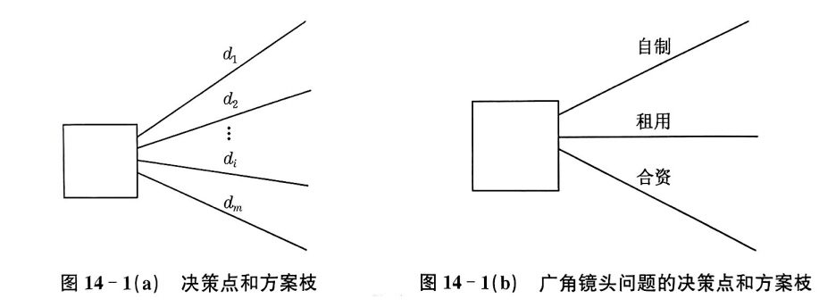
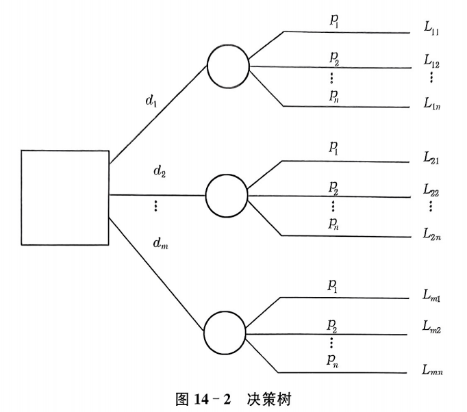
某企业工艺水平低，想在三年计划中改革工艺。两条路径：购买专利，成功概率 0.8；自行研制，成功概率 0.6。若改革成功，可选择增加一倍产量或两倍产量；若失败，只能维持原产量。市场需求高、中、低概率分别为 0.3、0.5、0.2。
| 自然状态 | 按原工艺 | 购买专利成功：增一倍 | 购买专利成功：增两倍 | 自行研制成功：增一倍 | 自行研制成功：增两倍 |
|---|---|---|---|---|---|
| 需求高 0.3 | 150 | 500 | 700 | 500 | 800 |
| 需求中 0.5 | 10 | 250 | 400 | 100 | 300 |
| 需求低 0.2 | -100 | 0 | -200 | 0 | -200 |
这是典型多阶段决策：先决定改革路径，再看成功失败，再决定生产规模，最后面对市场需求。
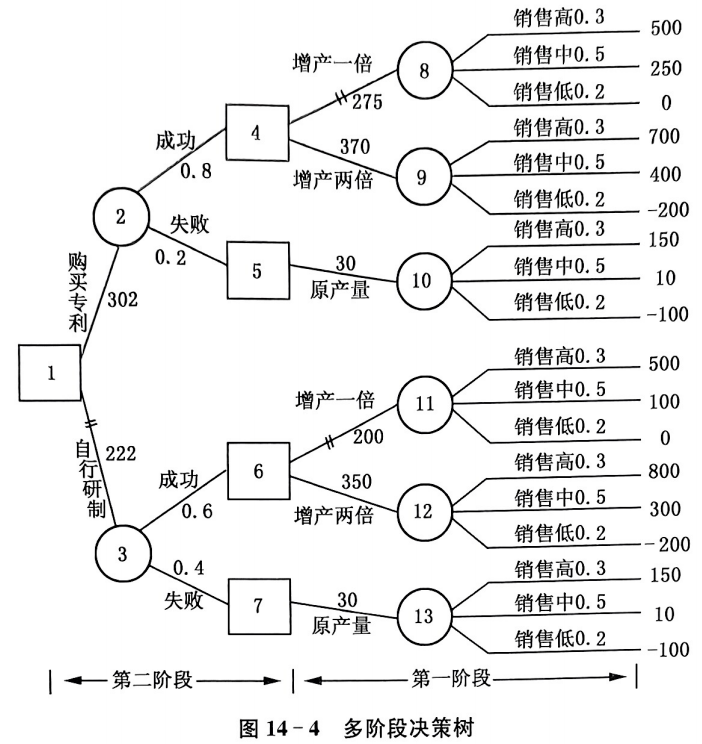
第一阶段局部选择：购买专利成功后，增加两倍产量 EV=370 优于增一倍 EV=275；自行研制成功后，增加两倍产量 EV=350 优于增一倍 EV=200。
成功概率 0.8，成功后采用“增加两倍产量”，期望利润 370；失败概率 0.2，只能原工艺，期望利润 30。
成功概率 0.6，成功后采用“增加两倍产量”，期望利润 350；失败概率 0.4，只能原工艺，期望利润 30。
最终决策：购买专利路径期望利润 302 万元，高于自行研制 222 万元，因此应选择购买专利。
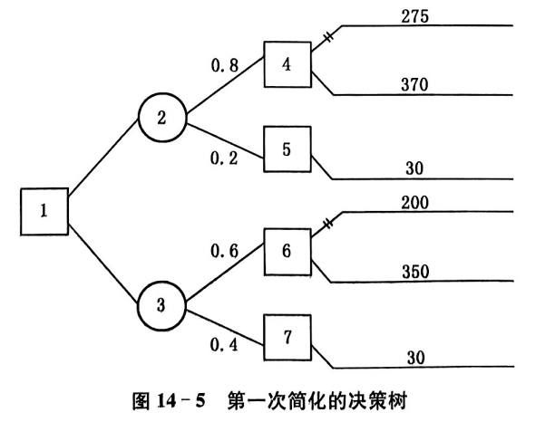
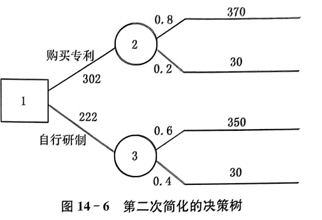
方案稳不稳，要看概率变了以后还选不选它
风险决策依赖自然状态概率，而概率往往来自经验估计，不可能完全精确。敏感性分析就是研究：概率变化到什么程度会导致最优方案发生改变。这个临界点概率称为转折概率。
求保持最优方案不变的概率允许范围。
判断概率估计方法是否足够精确。
判断当前决策是否稳定可靠。
直白说：如果概率稍微动一下，最优方案就换了，那这个决策方案脾气很差，不够稳。
| 方案 | 天气好 P | 天气坏 1-P |
|---|---|---|
| 开工 | 12.5 | -4.8 |
| 不开工 | 6.5(接零活) | -1.2（窝工费） |
解释：当天气好概率 $P>0.375$ 时，开工优于不开工；当 $P \lt 0.375$ 时，不开工优于开工。原预测 $P=0.65$，即使降到 $0.5$，仍高于临界概率，因此开工方案稳定。
过滤设备有上、中、下三层筛。三种修理方案成本如下。原概率为上层 0.35、中层 0.30、下层 0.35。
| 方案 | 上层故障 | 中层故障 | 下层故障 | 期望费用 |
|---|---|---|---|---|
| d1 一拆到底 | 65 | 65 | 65 | 65 |
| d2 先换上中 | 35 | 35 | 100 | 57.75 |
| d3 一层层换 | 20 | 55 | 120 | 65.5 |
若选择 $d_2$，需满足 $35+65P_3\leqslant65$ 且 $35+65P_3\leqslant55-35P_1+65P_3$，即 $P_3\leqslant0.462$ 且 $P_1\leqslant0.571$。
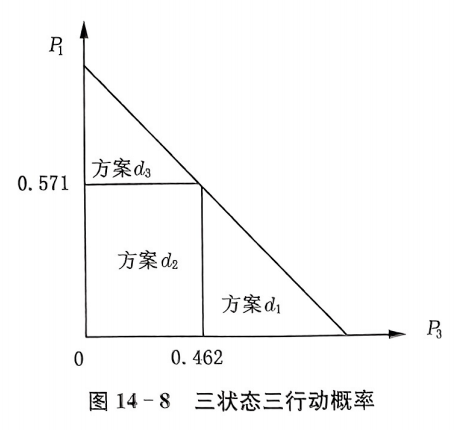
原概率离临界线较远，所以方案 $d_2$ 比较稳定。
信息有价值，但最多值多少钱，要算
完全信息是指：在采取行动前，能够准确知道将出现的自然状态。完全信息价值等于“有完全信息时的期望值”减去“没有完全信息时最优方案的期望值”。它表示我们最多愿意为这种信息支付多少成本。
直白解释：信息不是越多越好，信息如果比它能带来的改进还贵，那就是买了一个精致的心理安慰。
| 方案 | 销路好 P=0.7 | 销路差 P=0.3 | 期望损益 |
|---|---|---|---|
| 大工厂 | 100 | -20 | 340 |
| 小工厂 | 40 | 10 | 150 |
按教材表中 10 年累计扣除投资后的计算，建设大工厂期望收益为 340 万元，高于小工厂 150 万元，因此选择大工厂。
销路好时建大工厂。
销路差时不建厂，收益取 0。
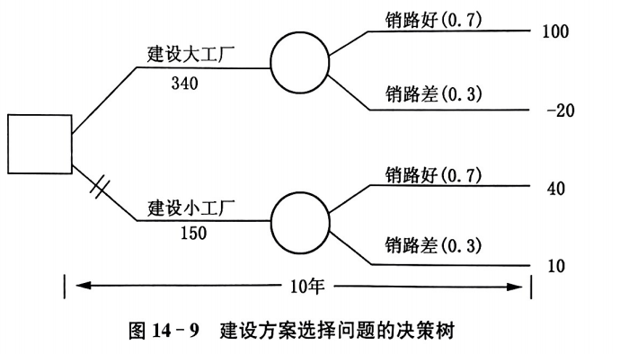
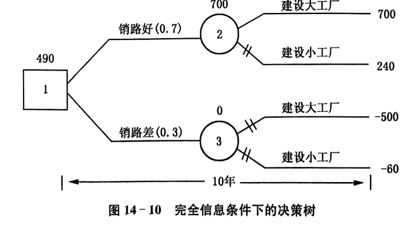
结论：完全信息价值为 150 万元。这说明这个决策问题有较大信息价值，值得进一步市场调查。但若调查成本超过 150 万元，理论上就不划算。
直接大批量生产：销路好概率 0.7，利润 1200 万元；销路差概率 0.3，损失 150 万元。
概率 0.8。若试销好，则以后销路好概率 0.85。
概率 0.2。若试销差，则以后销路好概率 0.10。
此时停产收益 0 更好。
结论：先试产试销的期望值比直接大批量生产多 3 万元，因此试销信息价值为 3 万元。这是为取得这项信息可支付成本的上限。
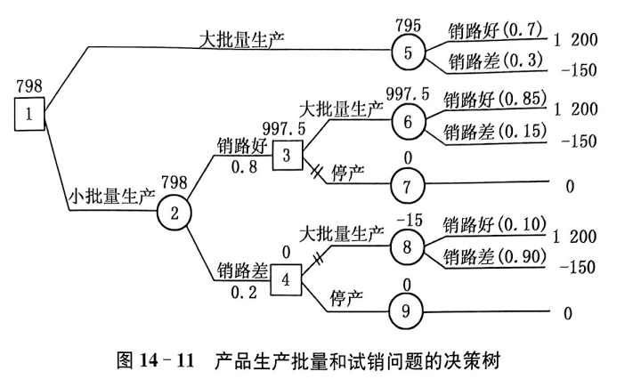
有些人怕亏，有些人爱冒险，效用就是把风险态度放进模型
以期望损益值为标准并不总是符合现实。相同的期望值，不同决策人可能有不同感受。效用就是决策人对收益、损失和风险的主观评价，反映其风险态度。
0.5 概率获利 4000 元，0.5 概率损失 2000 元。
100% 概率获利 500 元。
很多人会选乙，因为确定性收益带来更高心理满足。
关键：钱的数学期望和人的心理效用不是同一种东西。
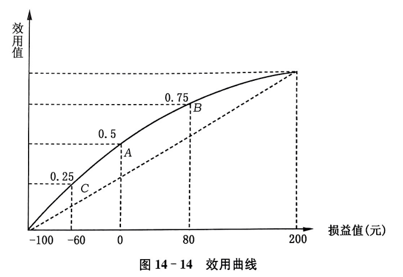
大多数决策者偏保守型，特别是一次性重大决策。
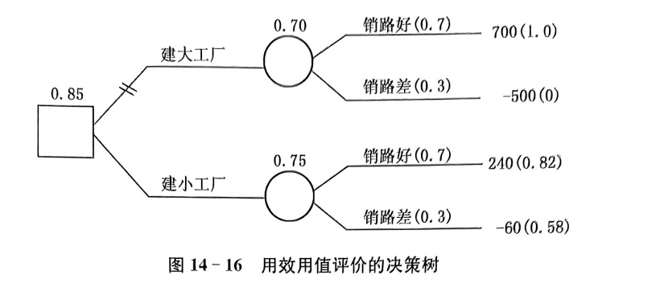
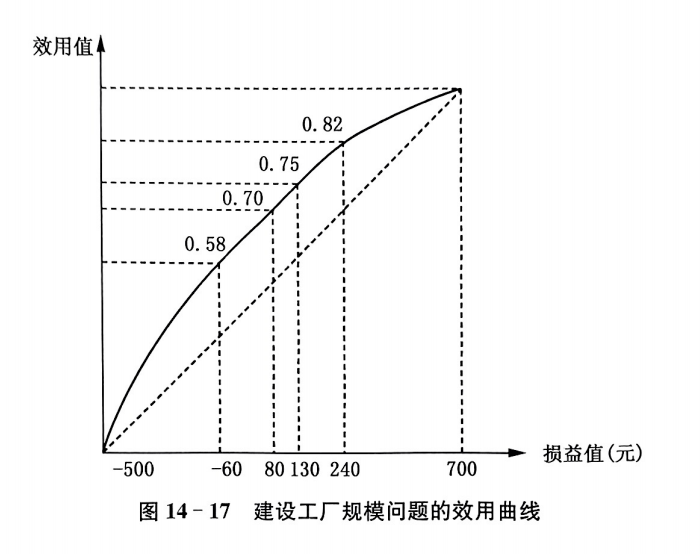
原按期望损益值标准，大工厂期望收益 340 万元，小工厂 150 万元，因此选大工厂。但若决策者是保守型，需要用效用值重新计算。
销路好效用 1.0，销路差效用 0。
240 万元效用 0.82，-60 万元效用 0.58。
结论：若按期望效用标准，小工厂更优。这说明风险态度会改变决策结论，期望值标准不是宇宙真理，它只是一个常用标准。
需求不是只有三档，现实经常是一条连续分布
在连续型风险决策中，自然状态可能有很多取值，不能一一列举损益矩阵。此时要寻找“期望收益随方案变化的规律”，通常用边际分析法或连续分布方法。
增加一单位产品且能卖出时多获得的利润。
增加一单位产品但卖不出去时造成的损失。
| 日销售量 | 天数 | 概率 |
|---|---|---|
| 100 | 24 | 0.2 |
| 110 | 48 | 0.4 |
| 120 | 36 | 0.3 |
| 130 | 12 | 0.1 |
进货成本 30 元，售价 50 元，卖出一箱利润 20 元；卖不出一箱亏损 10 元。
| 日销售量 | 销售概率 | 至少销售该数量的累积概率 |
|---|---|---|
| 130 | 0.1 | 0.1 |
| 120 | 0.3 | 0.4 |
| 110 | 0.4 | 0.8 |
| 100 | 0.2 | 1.0 |
结论：最佳日进货量约为 122 箱。超过这个点，新增一箱卖不出去的期望损失开始超过卖出去的期望利润。
某蔬菜商店每日需求量近似服从正态分布，均值 $\mu=37650$ 千克，标准差 $\sigma=9600$ 千克。每 500 克进价 0.80 元，售价 1.05 元，未售出则损失 0.80 元。
查标准正态分布表，满足 $\Phi(t)=0.2381$ 的 $t$ 约为 $-0.71$。
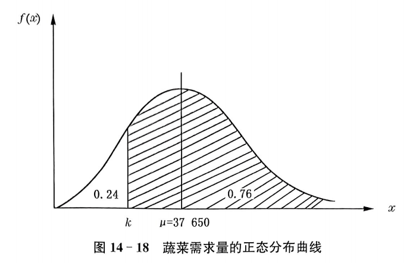
结论：每天应进货约 30844 千克，低于平均需求 37650 千克。因为卖不出去的损失较高，所以最优进货量会低于平均需求。这一点很反直觉，也很有用。
市场份额会流动，转移矩阵决定长期格局
马尔科夫决策关注系统状态及其转移。用于市场决策时，转移概率矩阵表示顾客保留、获得和失去的概率。下一期状态只与上一期状态有关，而不直接依赖更早历史。
关键：长期稳定状态主要由转移矩阵决定，而不是由初始市场份额决定。初始份额很努力，但矩阵才是命运导演。
A、B、C 三家公司近期客户流动资料可转化为得失转移概率矩阵。矩阵行表示“从本公司流向哪里”。
| 公司 | 7月1日客户 | 失去 | 保留 | 保留概率 |
|---|---|---|---|---|
| A | 200 | 40 | 160 | 0.80 |
| B | 500 | 50 | 450 | 0.90 |
| C | 300 | 45 | 255 | 0.85 |
8月1日市场占有率为 $(0.220,0.490,0.290)$。预测 9月1日占有率：
稳定状态满足 $(x_1,x_2,x_3)P=(x_1,x_2,x_3)$，且 $x_1+x_2+x_3=1$。
解释：只要转移矩阵不变，市场占有率会趋于稳定。要改变长期份额，不能只喊口号，要改变转移矩阵。
从 A 流失到 B 的客户中争回 5%。稳定占有率：
从 A 流失到 C 的客户中争回 5%。稳定占有率：
结论：虽然方案1市场份额更高，但方案2成本低，净盈利更高，因此应选择方案2。决策不是看哪个指标更漂亮，而是看目标函数。
最后一句：风险型决策不是帮我们消灭不确定性，而是让我们在不确定性面前少一点玄学、多一点计算。虽然世界依旧离谱，但至少我们离谱得有依据。